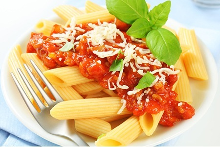

מעט על המתכון:
מקורה של המנה באי סן רמו שבאיטליה ומשם התפשט לכל העולם.
מומלץ להכין את המנה בצהריים ובערב ובכל זמן שרוצים להתפנק.

פסטה ברוטב עגבניות משובח עם פרורי גבינת פרמזן מגורדת ומוצרלה בלוווי
בזיליקום טרי. מנה קלה וטעימה שמכינים ברגע ממש.
מקורה של המנה הוא באיטליה שם הומצאה והפכה
לפופולרית כל כך שכיום ניתן למצוא מאכל זה בכל רחבי
העולם.

מקורה של המנה באי סן רמו שבאיטליה ומשם התפשט לכל העולם.
מומלץ להכין את המנה בצהריים ובערב ובכל זמן שרוצים להתפנק.
| שלב | זמן | טמפרטורה |
|---|---|---|
| בישול פסטה | 10 דקות | 100°C |
| טיגון בצל ושום | 5 דקות | בינונית |
| בישול רוטב | 8 דקות | |
| המסת גבינות | 3 דקות | 60°C |
| סך כל זמן ההכנה | 26 דקות | |